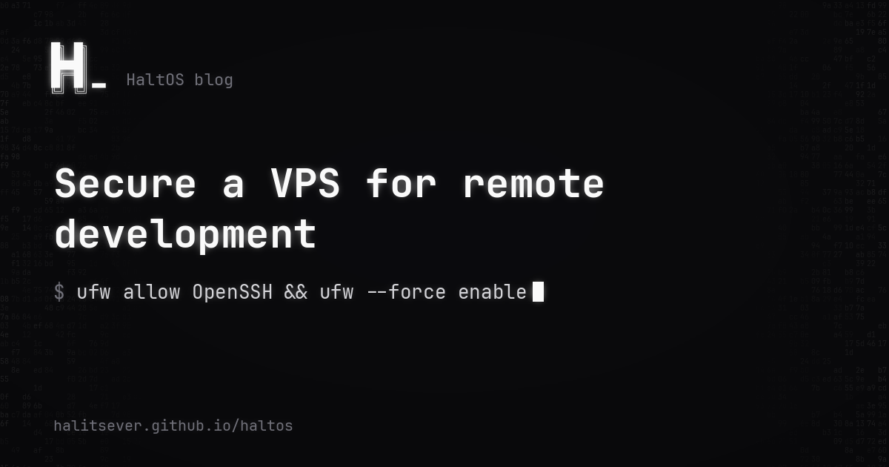
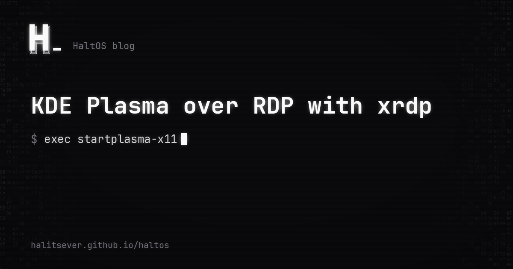
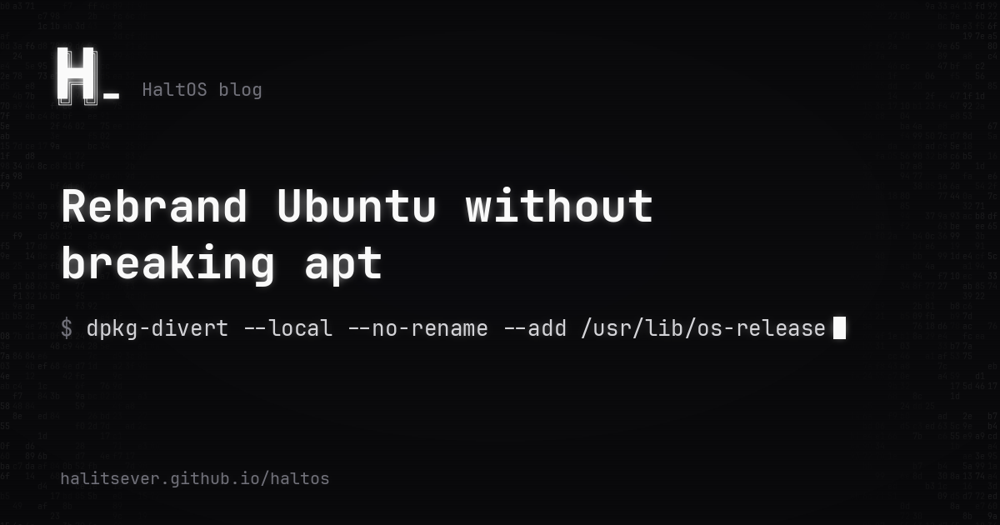
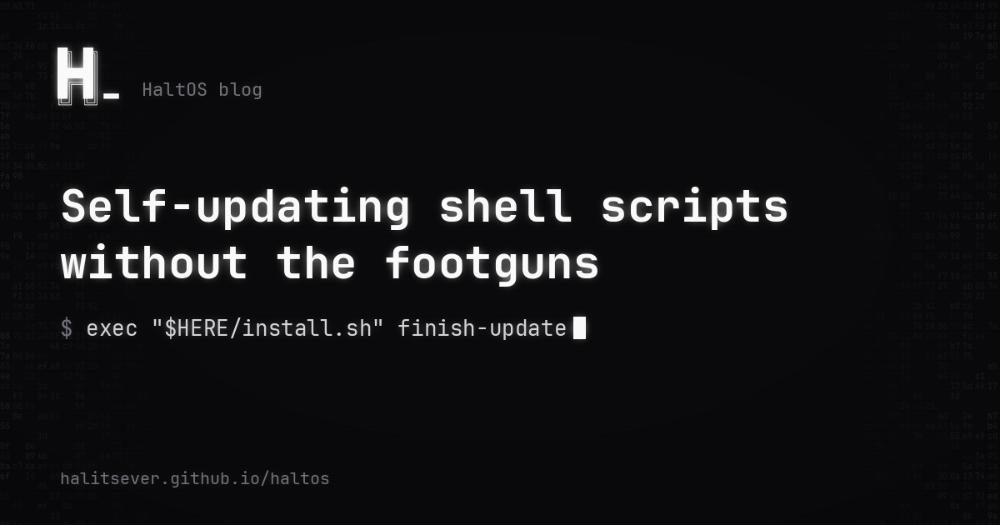

Blog
Notes from building HaltOS: running Claude Code on a server, remote KDE Plasma, theming, and shipping a shell-based OS layer.
 Run several Claude Code agents in parallel with git worktreesTwo Claude Code agents in one checkout will edit the same files. Give each agent its own git worktree and branch, and run them side by side with claudegrid.
Run several Claude Code agents in parallel with git worktreesTwo Claude Code agents in one checkout will edit the same files. Give each agent its own git worktree and branch, and run them side by side with claudegrid.
Secure a VPS for remote development: SSH keys, ufw and RDPA remote dev box is reachable from the whole internet. Key-only SSH, a default-deny firewall, unattended upgrades and an RDP port you can keep closed make it a much smaller target.
KDE Plasma over RDP on a VPS with xrdpHow to run a KDE Plasma desktop on a headless VPS and reach it with any RDP client: xrdp, the X11 session, booting without a display manager, and keeping it fast without a GPU.
Rebrand Ubuntu without breaking apt: os-release and dpkg-divertChanging what Ubuntu calls itself is easy to get wrong. Keep ID=ubuntu, change the display fields, and protect your files with dpkg-divert so package updates do not overwrite them. Generate a Kvantum theme from design tokensDrawing a Kvantum theme by hand means hundreds of SVG elements. Generating it from a handful of design tokens keeps every widget consistent and lets you recolour the whole theme in one place.
Generate a Kvantum theme from design tokensDrawing a Kvantum theme by hand means hundreds of SVG elements. Generating it from a handful of design tokens keeps every widget consistent and lets you recolour the whole theme in one place. Keep your dotfiles in git without leaking private filesSyncing desktop config through a public git repository is convenient and risky. Scrub home paths, drop history, skip binary files and keep a per-machine local-only list.
Keep your dotfiles in git without leaking private filesSyncing desktop config through a public git repository is convenient and risky. Scrub home paths, drop history, skip binary files and keep a per-machine local-only list. Why a monochrome desktop works for AI codingWhen agents write the code, your job is reading and reviewing. A desktop with one palette, one typeface and no accent colour keeps attention on the output that matters.
Why a monochrome desktop works for AI codingWhen agents write the code, your job is reading and reviewing. A desktop with one palette, one typeface and no accent colour keeps attention on the output that matters.
Self-updating shell scripts without the footgunsA shell script that updates itself with git can execute half of the old file and half of the new. Here is how HaltOS updates safely, follows release tags and tells you when a new version exists.